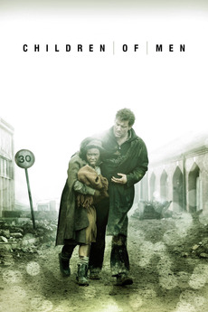
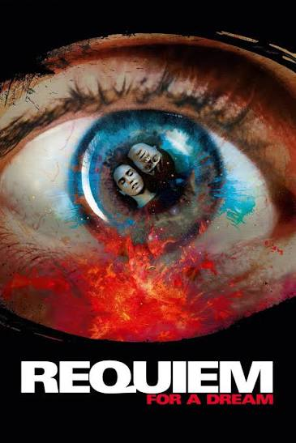
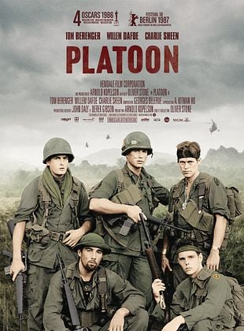
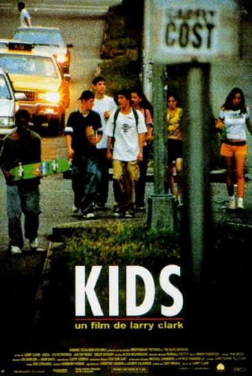

Children of Men (2006)
Using decaying environments and systemic collapse as a backdrop, where personal survival stories reveal broader societal failure.
The global immigration crisis.
Blue Eye Samurai (2023-) & Oldboy (2003)
Character constructed around fractured identity, self-hatred, and personal obsessions.


Requiem for a Dream (2000), Platoon (1986) & Trainspotting (1996)
Addiction & escape. Violence as a consequence of one's environment.

Kids (1995)
The unfiltered depiction of youth and social dynamics.
The absence of moral framing allows behaviors to speak for themselves.
V for Vendetta (2005) & The Boys (2019-2026)
The exploration of power and rebellion while exposing how systems manipulate us.